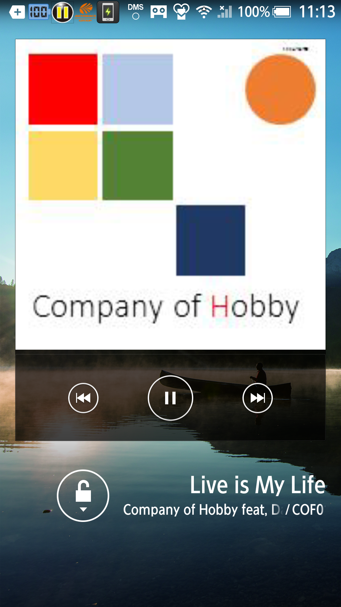

|
Music player usable commonly MaraSongs |
|
| Lockscreen Player | ||
|
The lock screen screen which I put my ingenuity in every terminal when I let you return indication is displayed by a lock screen. If reproduction of the music continues, a music player for lock screen is displayed. |
||
Screen constitution
|
After Android5
Before Android4.4  |
||
| . | Music information | From the top, it is an album name, a title. | |
| Album art | If a picture file is set in the music, I display it | ||
| Reproduction / stop button | It is a function same as the same name button of the player screen. | ||
| Return / forwarding button | It was placed in right and left of the reproduction / stop button at the terminal which I tested. | ||
| Note | |||
| . | Connection with Bluetooth |
Wireless remote controller correspondence and the indication when I had access to Bluetooth including a headset and the car audio system are carried out by a wireless remote controller function of the lock screen. ※The behavior varies according to a connected apparatus. |
|